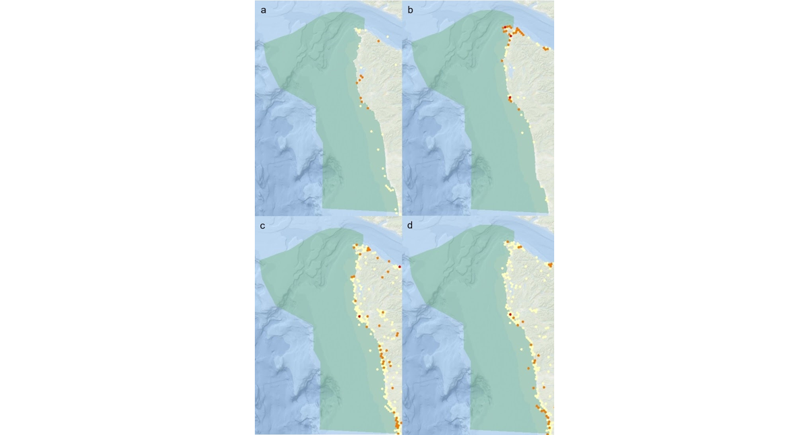
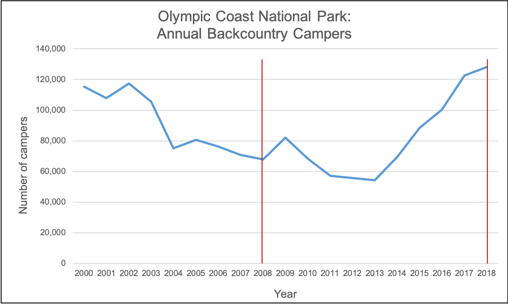
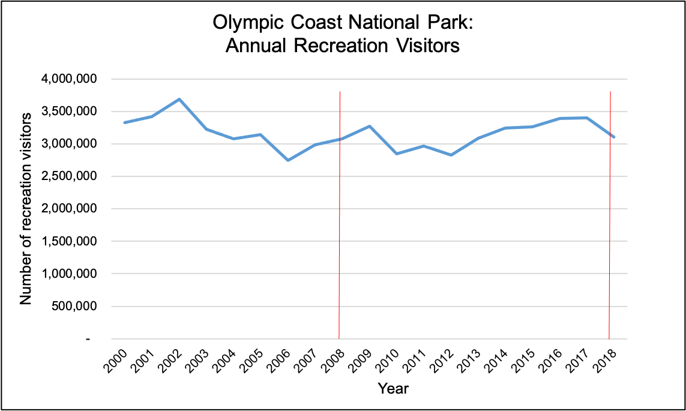
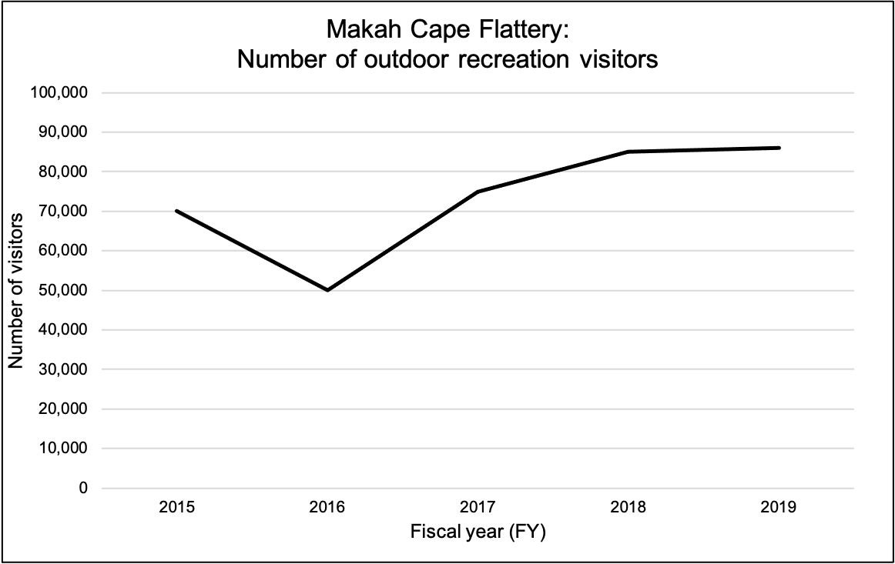
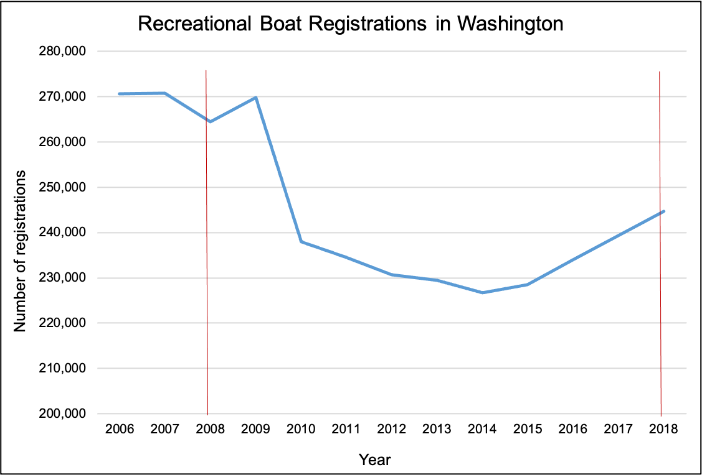
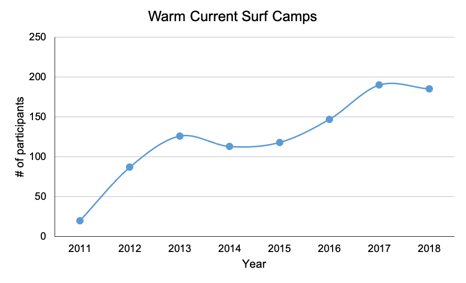

 Spatial distribution of recreational activities in and adjacent to OCNMS. The green polygon represents OCNMS boundaries. Red points indicate high use, orange points indicate moderate use, and yellow points indicate low use. (a) Diving activities, including snorkeling, free diving, and scuba diving, from shore and boats. (b) Surface water activities, including boating and sailing, kayaking, kiteboarding, skimboarding, surfing, and windsurfing. © Shore-based activities, including beachcombing, beach driving, beach going, biking and hiking, camping, hang gliding and parasailing, horseback riding, and tide pooling. (d) Wildlife viewing and sightseeing activities, including photography, scenic drives, sightseeing, and wildlife viewing from shore and boats. Source: Washington Marine Spatial Planning, 2020
 Annual number of backcountry campers at Olympic National Park, 2000–2018. Vertical red lines indicate the study period, 2008–2018. Source: National Park Service, 2020
 Annual visitation at Olympic National Park, 2000–2018. Vertical red lines indicate the study period, 2008–2018. Source: National Park Service, 2020
 Annual number of outdoor recreation visitors to Cape Flattery, 2015–2019. Source: Makah Tribe/NOAA
 Number of recreational boat registrations in the state of Washington, 2006–2018. Vertical red lines indicate the study period, 2008–2018. Source: National Marine Manufacturers Association, 2019
 Number of participants in Warm Current surf camps adjacent to OCNMS, 2011–2018. Source: Warm Current, personal communication, September 16, 2020